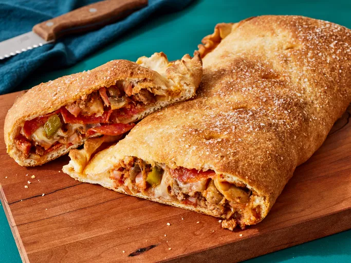

Home
Calzones

Description
stromboli recipe uses premade pizza dough. Kids and adults love this pizza
creation. I always have leftover sauce, so I serve it the next day over hot spaghetti.
Ingredients
- 1 (10 ounce) package pizza crust dough
- ½ pound lean ground beef
- (14 ounce) jar pizza sauce
- cup cooked ham, diced
- medium green bell pepper, chopped
- medium red onion, finely chopped
- (4.5 ounce) can mushrooms, drained
- (8 ounce) package sliced pepperoni sausage
- cup shredded mozzarella cheese
- ¼ cup butter, melted
Steps
- Gather all ingredients.
- Preheat oven to 400° F (200° C). Grease an 10x15x1-inch baking pan; set aside. Cook and stir ground beef in a large skillet over medium heat until browned, 5 to 7 minutes. Drain off and discard grease.
- Add pepper and onion to skillet. Cook over medium heat, stirring occasionally until vegetables are tender, about 5 minutes. Remove from heat.
- Stir in ham, mushrooms and pizza sauce. Set aside.
- Unroll pizza crust onto prepared baking pan.
- Pat dough to a 9 x13-inch rectangle.
- Lay half of the pepperoni lengthwise over half over the crust to within 1/2-inch of the edge.
- Spoon meat mixture over the pepperoni.
- Top with cheese and remaining pepperoni.
- Fold dough over filling.
- Pinch ends and sides together with your fingers to seal in the filling.
- Poke holes in the top with the tip of a sharp knife.
- Brush with melted butter.
- Bake in a preheated oven for 20 minutes or until golden brown.
- Let stand for 15 minutes before serving. Cut into four portions.